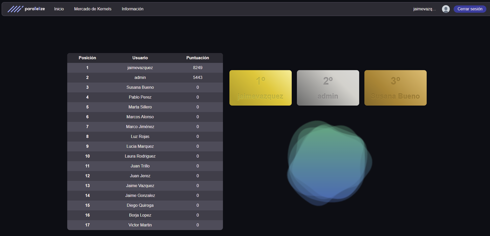
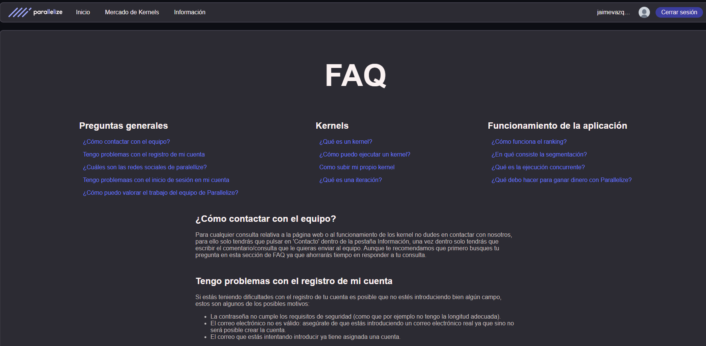
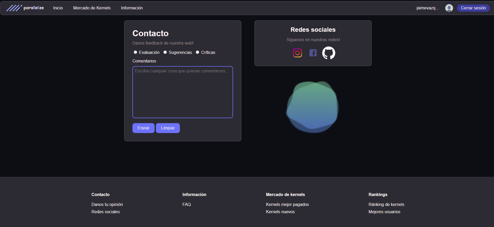
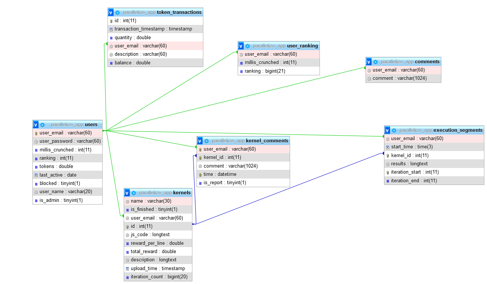

MEMORIA DE LA PRÁCTICA 4
INTRODUCCIÓN
En este documento se describe con detalle los scripts y la estructura de la base de datos que conforman este proyecto. El prototipo se puede visitar en el vps (solo disponible en la fdi o a traves del vpn)
Se ha utilizado github para el control de versiones el link del repositorio es repositorio.
Integrantes del grupo:- Jaime Gonzalez
- Marcos Alonso
- Juan Trillo
- Juan Jerez
- Diego Quiroga
- Jaime Vazquez
Descripción detallada de la aplicación
En primer lugar, para poder interactuar con la aplicación y todas sus funcionalides será necesario crear una cuenta rellenando el formulario de reistro que se muestra al pulsar el botón 'Crear Cuenta' de la barra de navegación:

Una vez creada la cuenta se podrá empezar a interactuar. A continuación se esxplican las funcionalidades de la aplicación con distintas capturas usadas a modo de ejemplo.
-
Subir Kernel: Para subir un kernel propio habrá que dirigirse al perfil de usuario, pulsar en el boton donde se indica 'SUBIR KERNEL' y rellenar los campos pertinentes al kernel, enhorabuena, ¡Ya habrás subido tu kernel a la aplicación!

-
Ejecutar un kernel: Para ejecutar un kernel habrá que pulsar dirigirse al Mercado de Kernels, seleccionar el kernel a ejecutar y pulsar el botón comenzar para empezar el procedimientos de solicitud de ejecución, asimismo si tienes algun comentario que hacer con respecto al kernel puedes hacerlo en la sección correspondiente.

-
Ranking: Esta funcionalidad muestra un ranking con los usuarios que más puntos han conseguido ejecutando kernels, una vez que se ejectua uno, la información del ranking se actualiza automáticamente.
 -
Perfil: Haciendo click en la imagen de perfil, el usuario tiene la posibilidad de realizar acciones en su cuenta como por ejemplo: ver su posición en el ranking, sus tokens, últimos kernels subidos y una página de ajustes de cuenta -donde podrá realizar acciones como el cambio de nombre de esuario- entre otras opciones

-
FAQ: Esta sección muestra respuestas a preguntas frecuentes, es una forma rápida y cómoda de responder las preguntas de los usuarios, en la vista se muestra un índice con la preguntas más frecuentes y haciendo click en la pregunta se muestra la respuesta correspondiente.
 -
Contacto: En caso de que la página de FAQ no sea de utilidad para la duda concreta de un usuario o el este quiera dar cualquier tipo de feedback, tiene la posibilidad de contactar directamente con el equipo de desarrollo rellenando el formulario de contacto.

LISTADOS DE SCRIPTS PARA LAS VISTAS
Se ha decidido utilizar un script PHP para cada vista, dando como resultado la siguiente lista clasificada según la funcionalidad o el tema.
Inicio de sesión y creación de cuenta.
- login.php: muestra una vista desde la que el usuario puede iniciar sesión. Acompañando a este script está logout.php que permite al usuario cerrar sesión, no es como tal un script de vista.
- register.php: muestra una vista desde la que el usuario puede completar un formulario para crearse una cuenta.
Subida de kernels.
- your_kernels.php: muestra una vista exclusiva para usuarios registrados en la que hay información sobre los kernels subidos por él y un botón para añadir uno nuevo.
- subirKernel.php: muestra un formulario para completar la información se un kernel que se quiere añadir. Está conectado con el script your_kernels.php a través de un botón.
Ejecución de kernels.
- kernel_marketplace.php: muestra una vista de mercado donde el usuario puede ver las ofertas de kernels.
- kernel_info.php: muestra toda la información referente a un kernel. Se conecta con kernel_marketplace.php a través de un botón y muestra algunas propiedades del kernel. ⚠ Esta vista contiene errores de validación producidos por la librería code mirror (usada para el sintax hilighighting del codigo del kernel) ⚠
- kernel_execution.php: es una vista auxiliar a kernel_info.php que se muestra cuando el usuario decide ejecutar un kernel.
Valoraciones.
- kernel_info.php: junto a la información mostrada del kernel hay una sección que permite hacer valoraciones.
Gestión de tokens.
- wallet.php: muestra una vista exclusiva para usuarios registrados que da información detallada sobre la cartera de tokens: historial de transacciones, gráficas, ... Junto a la información hay dos secciones con botones para retirar tokens o añadir tokens.
- token_transaction.php: muestra una vista auxiliar para completar la transacción deseada (retirar o añadir tokens) a través de un formulario.
Ranking.
- ranking.php: muestra una vista que lista a los usuarios con mayor participación dentro de la aplicación. Si estás registrado, se mostrará tu posición, aunque no estés en los primeros
Gestión de administrador.
- admin_dashboard.php: muestra una vista exclusiva a usuario con rol de administrador que permite realizar todas las acciones de administrador.
Vistas complementarias.
- index.php: muestra la vista principal de la página, lo que primero se muestra a un usuario que no esté registrado.
- FAQ.php: muestra una vista para preguntar cuestiones sobre la página a través de un buscador o por una lista de preguntas dividida en secciones.
- contacto.php: muestra una vista desde la que se puede rellenar un formulario para sugerencias, quejas o cuestiones. Además, se muestran enlaces a las distintas redes sociales de la empresa.
- user_dashboard.php: muestra una vista exclusiva para usuarios registrados. Es la vista que primero se le muestra a un usuario registrado. En ella hay información resumida sobre la cuenta.
- settings.php: muestra una vista exclusiva para usuarios registrados donde se puede modificar el nombre del usuario.
- profile_view.php: muestra una vista que da detalles públicos sobre un usuario.
Componentes.
- logo_nav_bar.php: genera una barra de navegación utilizada en login.php y register.php que permie regresar a index.php.
- nav_bar.php: genera una barra de navegación que permite acceder a las páginas públicas para cualquier usuario: index.php, kernel_marketplace.php, ranking.php, FAQ.php y contacto.php. Además, dependiendo de si se está registrado o no, se mostrarán botones para iniciaar sesión y crear cuenta, o se mostrará el nombre del usuario registrado y un acceso al user_dashboard.php.
- user_nav_bar.php: genera una segunda barra de navegación exclusiva para usuarios registrados que permite navegar por las vistas de usuario: user_dashboard.php, wallet.php, your_kernels.php y settings.php. Se muestra sólo en esas vistas.
- footer.php: genera un pie de página para dar mayor accesibilidad al usuario.
- token_big_info.php: genera una sección que da detalles sobre la cartera de tokens de un usuario.
- transaction_graph.php: genera una gráfica que resume las transacciones realizadas por el usuario.
- transaction_table.php: genera una tabla con las trasacciones realizadas por el usuario.
CONTENIDO DE LAS CSS
Se ha decidido utilizar una CSS global en común para todas las vistas y siempre respaldada y completada por una CSS particula para cada vista, dando como resultado la pertinente vista de la web.
- global.css: contiene una serie de ajustes comunes para todas las css;Entre esos ajustes se encuentran: la paleta de colores de la página(colores a usar en el fondo letras etc; una base para todas las páginas(cuerpo, contenedores principales a usar, predefiniciones para todos los elementos usados como los botones,campos de formularios, contenedores, blobs y tablas)).
- footer.css: en este archivo se incluye el formato del footer sobreescribiendo global.css
- index.css: incluye el formato de las "imagenes" de gradiente diagonal mostradas en index (en realidad son simples divs).
- contacto.css: simplemente ajusta las imagenes y contenedores mostrados por contactos.php.
- FAQ.css: ajusta las Frequently Asked Questions y les da colores de la paleta a las dichas.
- kernel_info.css: incluye el formato que será usado para mostrar el código del kernel.
- login.css, settings.css, profile_view.css, register.css, marketplace.css, subirKernel.css y token_transaction.css: incluyen ligeros ajustes al formato de botones contenedores y demás.
- ranking.css: incluye el formato de la tabla vista en ranking y los gradientes del podio.
- nav_bar.css: incluye el formato de la barra principal de la web accesible desde casi todas las vistas.
- usernav_bar.css: incluye el formato de la barra principal del usuario accesible desde el perfil del mismo.
- wallet.css y your_kernels.css: incluyen ajustes mas notorios a los contenidos de sus respectivas vistas .php.
LISTADOS DE SCRIPTS ADICIONALES
Como la gestión de la base de datos es compleja, se ha decidido separar la funcionalidad en clases:
- Aplicacion.php: contiene la funcionalidad básica para mantener una única conexión con la base de datos.
- Usuario.php: contiene toda la funcionalidad directamente relacionada con el usuario.
- Kernel.php: contiene toda la funcionalidad directamente relacionada con los kernels.
- Comentario.php: contiene toda la funcionalidad directamente relacionada con los comentarios.
- Transaction.php: contiene toda la funcionalidad directamente relacionada con las transacciones (retirada o adición de tokens).
Además de estas clases, se ha decido crear una familia de clases que heredan de Formulario.php, lo que permite organizar y modificar fácilmente todos los tipos de formularios utilizados.
- Formulario.php: clase abtracta de la que heredan el resto de formularios. Con tiene la funcionalidad compartida entre todos los formularios.
- FormularioContacto.php: permite crear y gestionar un formulario para la página de contacto.
- FormularioLogin.php: permite crear y gestionar un formulario para la página de login.
- FormularioRegister.php: permite crear y gestionar un formulario para la página de creación de cuenta.
- FormularioTransaction.php: permite crear y gestionar un formulario para la página de token_transaction.php.
Adicionalmente se ha creado carpeta llamada backend que contiene la forma que tiene el programa de ejecutar el kernel concurrentemente.
- get_computation_segment.php: se encarga de asignar un segmento del kernel a un usuario para que lo ejecute
- get_results.php: Se encarga de conseguir el resultado de cada una de las iteraciones del kernel, no confundir con los segmentos, y las almacena en un csv poniendo primero el resultado y luego la coma.
- submit_results.php: realiza la comunicacion entre el usuario y el servidor para entregarle los resultados, se le pide al usuario hacer el login, se calcula el tiempo de codigo ejecutado y se le dan los tokens al usuario
JavaScript
Adicionalmente se ha creado carpeta llamada backend que contiene la forma que tiene el programa de ejecutar el kernel concurrentemente.
Codemirror
Es la libreria que hemos utilizado para crear los editores y visores del codigo en subir kernel y kernel_info.
- codemirror.css: Codigo css del editor de codigo de codemirror.
- codemirror.js: Libreria de codemirror.
- dracula.js: Tema del editor para la visualizacion de codigo.
- javascript.js: Soporte de sintaxis para lenguaje javascript.
Toda la creacion de los editores se encuentran en el achivo kernelViz.php.
- nav_bar.js: se encarga de realizar un toggle en la navbar de encogerla y ampliarla.
- user_nav_bar.js: Se encarga de realizar un toggle en la user navbar de encogerla y ampliarla.
- gpu-browser.min.js: Libreria importada que se encarga de que la ejecucion concurrente del kernel funcione.
- work_coordination.js: se encarga de empezar a ejecutar el kernel, tambien se encarga de gestionar la ejecucion de los segmentos del kernel cuando un dispositivo este pidiendo trabajo ademas de mandar el resultado
- kernel_execution.php: Se encarga de ejecutar el segmento del kernel
- kernelViz.php: Se ocupa de la creacion de text areas usando la libreria de codeMirror para javascript con syntaxHighlighting
Por último, también se ha decidio utilizar un script PHP con funcionalidad auxliar.
- config.php: permite reducir la repetición de código común entre los script y que permite iniciarlizar la sesión y otros valores como constantes.
ESTRUCTURA DE LA BASE DE DATOS
Para garantizar una mayor seguridad en la base de datos se ha decidido crear un nuevo usuario que será el encargado del manejo de esta.
Las tablas de la base de datos han sufrido modificaciones para adecuarla con el nuevo codigo realizado y con los nuevos problemas que nos hemos encontrado
Explicación de las tablas
- users:
- user_email: el email del usuario.
- user_password: contraseña del usuario
- millis_crunched: tiempo dedicado en la plataforma ejecutando codigo
- ranking: numero de la posicion en el ranking segun los millis crunched
- tokens: créditos que posee el usuario
- last_active: aun no esta implementada, pero guardara el ultimo momento en el que el usuario ha entrado a la web
- blocked: baneo de la cuenta por subir codigo malicioso o por otros motivos
- user_name: nombre del usuario visible para los demas
- comments: registra los comentarios enviados por la funcionalidad de contacto. La clase
comentario maneja las lecturas y escrituras de esta tabla.
- user_email: apunta al usuario autor
- comment: el contenido del comentario
- kernels: guarda los kernels que han sido subidos por los usuarios y la información acerca de
ellos. La clase Kernel maneja las lecturas y escrituras de esta tabla.
- name: el nombre del kernel
- user_email: apunta al usuario autor
- id: identificador unico
- js_code: el codigo a ejecutar
- total_reward: el valor de recompensa total ofrecida
- description: un texto que describa el funcionamiento del código
- progress_map: mapa de bits que determina que iteraciones están ejecutadas y cuales no.
- token_transaction: registra cada transacion entrante o saliente de tokens para poder mostrar la
evolución a lo largo del tiempo de tu balance. La clase Transaction maneja las lecturas y
escrituras de esta tabla.
- id: identificador unico
- transaction_timestamp: segundo en el que se ejecutó la transación
- quantity: cantidad de tokens introducida o extraida
- user_email: usuario beneficiado
- description: breve texto explicando la razón del movimiento
- balance: balance resultante
- execution_segments: lleva un registro de todas las veces que un usuario ejecuta un kernel
para poder repartid las recompensas, se guarda en el momento que el cliente devuelve los datos
resueltos.
- user_email: el usuario responsable del calculo
- start_time: el momento cuando se asigno
- kernel_id: el id del kernel ejecutado
- iteration_start: por que iteración ha empezado a ejecutar
- iteration_end: que iteración ha sido la última en ejecutar
- results:resultado de la ejecucion
- kernel_comments: Registra los comentarios o denuncias que se han hecho en los kernels por los
usuarios. Se muestran en kernel info debajo de cada kernel.
- user_email: el usuario que ha escrito el comentario.
- kernel_id: el id del kernel en el que se encuentra el comentario.
- comment: El contenido del comentario.
- time: La fecha y hora con precision de segundos del comentario.
- is_report: Valor que determina si el comentario se debe tratar como una denuncia por un administrador
- user_ranking: Es una vista que muestra los usuarios ordenados respecto a los milisegundos
computados y su posición en el ranking. Se utiliza para mostrar el ranking de usuarios en su
perfil.
- user_email: el usuario responsable del calculo
- millis_crunched: Los milisegundos computados por el usuario
- ranking: La posicion actual en el ranking global de usuarios
SOBRE EL PROTOTIPO FUNCIONAL
Uso.
El prototipo tiene una carpeta 'sql' que contiene los archivos necesarios para importar la base de datos. Una vez importada se puede probar directamente las funcionalidades con las cuentas de usuario ya creadas: jaime@email.com (contraseña: jaimejaime) y diego@email.com (contraseña: diegodiego)por ejemplo .A parte de esas dos cuentas se han creado más usuarios para dar forma a la tabla del ranking, también es posible crear cuentas de usuario nuevas.
También existe la posibilidad de ser administrador, hay una cuenta creada como administrador (correo: admin@parallelize.com, contraseña: adminadmin). Si inicias sesión como administrador tendrás algunos cambios en el perfil como obtener una lista de usuarios (pulsando en el botón 'Admin Dashboard') con la opción de bloquear a usuarios(Funcionalidad no implementada todavía).
Estructura
En la raíz de la carpeta donde se almacena el prototipo ('public') se pueden encontrar todos los scripts utilizados para la vistas y una serie de carpetas con recursos que usarán dichos scripts: 'css', 'img', 'includes', 'js' y 'svg'. La carpeta includes contiene los scripts auxiliares y las carpetas 'dao' (clases de la base de datos), 'formularios' y 'vistas' (secciones reutilizables).
FUNCIONAMIENTO DE LA SEGMENTACIÓN Y EJECUCIÓN CONCURRENTE DE LOS KERNELS
El funcionamiento de la segmentación y ejecucion concurrente se gestiona a través de la carpeta backend y enlazando con los archivos de JavaScript correspondiente, una vez el usuario escoge un kernel al que unirse se le asigna un segmento libre, el encargado de hacerlo es el archivo get_computation_sgment.php, una vez escogido un segmente se llama a gpu-browser-min.js que toma control de la gpu del usuario y ejecuta el segmento correspondiente, es importante tener en cuenta que la clave es que los segmentos de todos los usuarios se ejecutan concurrentemente por lo que el programa se encarga de seleccionar cada segmento libre a un usuario. Una vez ejecutado el segmento el archivo get_results.php saca los resultados de la ejecución y submit_results.php se encarga de asignar la recompensa para que conste en la base de datos.
| Miembros | Tareas |
|---|---|
| Jaime Gonzalez |
|
| Marcos Alonso |
|
| Juan Trillo |
|
| Juan Jerez |
|
| Diego Quiroga |
|
| Jaime Vazquez |
|